전자산업기사 (2005-05-29 기출문제)
1과목: 전자회로
1. 발진기에 대한 설명 중 옳지 않은 것은?
- 직류를 공급하여 교류를 얻어내는 회로를 말한다.
- 발진기를 처음 동작시키기 위해서는 최소한 한주기의 교류를 입력시켜야 한다.
- Barkhausen의 자려발진 조건을 만족시켜야 한다.
- 선택도 Q가 큰 동조회로를 사용할수록 주파수 안정도가 양호하다.
(정답률: 42%)

2. 하틀레이(Hartley) 발진기에서 궤환(feedback) 요소는?
- 저항
- 용량
- 코일
- 진공관
(정답률: 85%)
3. 다음 회로는 어떤 목적에 이용될 수 있는가?
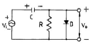
- 클램핑(Clamping)
- 클리핑(Clipping)
- 정류기(Rectifier)
- 변조(Modulation)
(정답률: 95%)
4. 소스 폴로어(Source follower)증폭기는 부궤한 증폭기의 일종이다. 전압증폭도 Av는 약 얼마인가?
- 0
- 0.5
- 1
- 부하저항에 비례한다.
(정답률: 53%)
5. 어떤 B급 푸시-풀 증폭기의 효율이 0.7이고 직류 입력전력이 16[W]이면, 교류 출력 전력은?
- 10.3[W]
- 10.7[W]
- 11.0[W]
- 11.2[W]
(정답률: 84%)
6. 트랜지스터의 고주파 특성으로서 α차단주파수 fα는 무엇으로 결정되는가?
- 컬렉터에 걸어주는 전압에 비례한다.
- 베이스폭과 컬렉터 용량에 각각 반비례한다.
- 베이스폭의 자승에 반비례하고, 확산계수에 비례한다.
- 이미터에 걸어주는 전압에 비례하고, 컬렉터 용량에 반비례한다.
(정답률: 36%)
7. 트랜지스터의 전류증폭률인 α와 β사이의 관계로서 옳은 것은? (단, α : 베이스 접지 전류 증폭률 β : 이미터 접지 전류 증폭률)
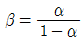
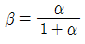
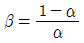
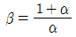
(정답률: 80%)
8. 궤환이 걸리지 않을 때의 증폭회로의 전압이득을 A, 궤환률을 β라 할 때 발진 조건은?
- Aβ ＜ 1
- A = -β
- Aβ = 1
- A = β
(정답률: 69%)
9. 다음 회로는 무슨 정류회로인가?
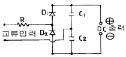
- 양파 정류회로
- 반파 배압정류회로
- 전파 배압정류회로
- 브리지 정류회로
(정답률: 46%)
10. 슬루 레이트(slew rate)의 단위는?
- V/㎲
- ㎲/V
- ㎲/A
- A/㎲
(정답률: 80%)
11. 부궤환(負歸還)시 입력이 2[V] 일 때 출력이 10[V]라고 하면 무궤환(無歸還) 시는 입력이 0.2[V]로 동일 출력을 얻는다고 한다. 이 때의 궤환률 β는?
- 0.08
- 0.18
- 1.2
- 1.8
(정답률: 44%)
12. 잡음이 많은 전송로(Channel)를 통한 신호 전송에 가장 유리한 펄스 변조 방식은?
- 펄스 폭 변조(PWM)
- 펄스 부호 변조(PCM)
- 펄스 진폭 변조(PAM)
- 펄스 위치 변조(PPM)
(정답률: 77%)
13. 그림의 달링톤(Darlington) 접속 회로에서의 전류 증폭률 은?(단, Q1, Q2의 전류 증폭률은 각 각 A1, A2 이다.)
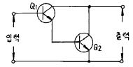
- Ai=A1+A2
- Ai=A1 Χ A2
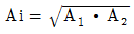
- Ai=(A1·A2)2
(정답률: 22%)
14. 연산증폭기의 응용 회로에 속하지 않는 것은?
- 배율기(multiplier)
- 가산기(adder)
- 변환기(converter)
- 적분기(integrator)
(정답률: 50%)
15. 반송파 전력이 40[㎾]일 때 변조율이 80[%]로 진폭 변조 하였다. 이 때 하측파 전력은?
- 3.2[㎾]
- 6.4[㎾]
- 12.8[㎾]
- 52.8[㎾]
(정답률: 37%)
16. 연산증폭기(OP-Amp)의 특성 중 옳지 않은 것은?
- 전압귀환 증폭기이다.
- 낮은 전압이득을 갖는다.
- 낮은 출력 임피던스를 갖는다.
- 높은 입력 임피던스를 갖는다.
(정답률: 59%)
17. 그림과 같은 회로의 출력 전압은?
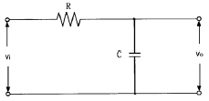
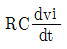
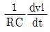
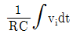
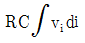
(정답률: 76%)
18. 증폭기의 구성 중 C급 증폭기의 장점으로 옳은 것은?
- 잡음의 감소
- 효율의 증대
- 회로 구성이 간단하다.
- 출력 파형의 일그러짐 감소
(정답률: 76%)
19. 다중 회선을 구성할 때 시분할 방식으로 하려면 어떠한 변조 방식이 적절한가?
- AM 변조
- FM 변조
- PM 변조
- 펄스 변조
(정답률: 78%)
20. 그림에서 A는 연산증폭기이다. V1=2V, V2=3V 일 때, Vo는?
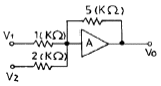
- -17.5V
- -1.6V
- -11.25V
- -7.2V
(정답률: 80%)
2과목: 전기자기학 및 회로이론
21. 철심이 든 환상 솔레노이드에서 2000AT의 기자력에 의하여 철심내에 4×10-5Wb의 자속이 통할 때 이 철심의 자기저항은 몇 AT/Wb 인가?
- 2×2107
- 3×3107
- 4×4107
- 5×5107
(정답률: 49%)
22. 안 반지름이 a[m]이고, 바깥 반지름이 b[m]이며, 길이 ℓ[m]인 진공 동축케이블의 자기인덕턴스를 나타내는 식은? (단, 내측 원통 도체의 비투자율은 μr이라 한다.)
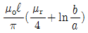
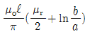
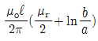
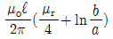
(정답률: 34%)
23. Faraday 관에서 전속선수가 5Q 개 이면 Faraday관의 수는 몇 개인가?
- 5Q
- Q/5
- 5/Q
- Q/ε
(정답률: 57%)
24. 유전률 ε,투자율 μ인 매질내에서 전자파의 전파속도는?
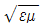
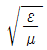
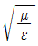
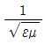
(정답률: 68%)
25. 자계내에서 도선에 전류를 흘려 보낼 때, 도선을 자계에 대해 60도의 각으로 놓았을 때 작용하는 힘은 30도의 각으로 놓았을 때 작용하는 힘의 몇 배인가?
- 2
- √2
- √3
- 4
(정답률: 62%)
26. 비유전률 εs에 대한 설명으로 옳은 것은?
- 진공의 비유전률은 0 이고, 공기의 비유전률은 1 이다.
- εs 는 항상 1 보다 작은 값이다.
- εs 는 절연물의 종류에 따라 다르다.
- εs 의 단위는 C/m 이다.
(정답률: 75%)
27. ε1 ＞ ε2 인 두 유전체의 경계면에 전계가 수직으로 입사할 때 단위면적당 경계면에 작용하는 힘은?
- 힘
 이 ε2에서 ε1으로 작용한다.
이 ε2에서 ε1으로 작용한다. - 힘
 이 ε2에서 ε1으로 작용한다.
이 ε2에서 ε1으로 작용한다. - 힘
 이 ε2에서 ε1으로 작용한다.
이 ε2에서 ε1으로 작용한다. - 힘
 이 ε2에서 ε1으로 작용한다.
이 ε2에서 ε1으로 작용한다.
(정답률: 44%)
28. 면전하 밀도가 σ[C /m2]인 대전 도체가 진공 중에 놓여 있을 때, 도체 표면에 작용하는 정전응력 F[N/m2]은?
- σ 에 비례한다.
- σ2 에 비례한다.
- σ 에 반비례한다.
- σ2 에 반비례한다.
(정답률: 42%)
29. 자기인덕턴스 0.1H에 전류가 2A 흐를 때 축적되는 자기 에너지는 몇 J인가?
- 0.1
- 0.2
- 0.4
- 0.6
(정답률: 80%)
30. 한변의 길이가 10cm 인 정삼각형의 3 꼭지점 A, B, C 에 각각 2×10-6 C, -2×10-6 C, 2×10-6 C 이 있을 때 꼭지점 C 의 점전하에 작용하는 힘의 크기는 몇 N 인가?
- 1.8
- 3.6
- 5.4
- 7.2
(정답률: 41%)
31. 자기 인덕턴스 L1 , L2 상호 인덕턴스 M 인 결합 회로의 결합계수가 1 이면 다음 중 옳은 것은? (단, L1 L2 는 두개 코일의 자기 인덕턴스임.)
- L1L2＜M2
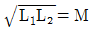
- L1L2=M
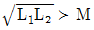
(정답률: 56%)
32. 전송선 회로의 특성 임피던스는? (단, 직렬 임피던스: Z, 병렬 어드미턴스: Y 라 한다.)
- Z/Y
- √Z/Y
- Y/Z
- √Y/Z
(정답률: 43%)
33. R-C 직렬 회로에 직류 전압을 가할 때 시정수(τ)를 표시 하는 것은?
- C/R
- CR
- 1/CR
- R/C
(정답률: 84%)
34. 교류전압 100[V], 전류 20[A]로서 1.6[kW]의 전력을 소비하는 회로의 리액턴스는 몇 [Ω]인가?
- 3
- 4
- 5
- 10
(정답률: 19%)
35. sinωt 의 라플라스 변환은?
- S/S2+ω2
- S/S2-ω2
- ω/S2+ω2
- ω/S2-ω2
(정답률: 69%)
36. 옴(ohm)의 법칙에서 전압은?
- 전류에 비례한다.
- 전류에 반비례한다.
- 전류의 제곱에 비례한다.
- 전류와 무관하다.
(정답률: 96%)
37. 정 K형 필터에 있어서 임피던스 Z1 Z2 는 어떻게 나타내는 가?(단, K는 공칭 임피던스라 한다.)
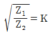

- Z1Z2=K2
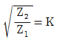
(정답률: 76%)
38. 4단자망에서, 각 파라미터들을 설명한 것으로 옳은 것은?
- 4단자망에서, 임피던스 파라미터는 단자 전류 I1 과 I2 를 단자 전압 V1 과 V2 로 나타내는 파라미터이다.
- 4단자망에서, 어드미턴스 파라미터는 단자 전압 V1 과 V2 를 단자 전류 I1 과 I2 로 나타내는 파라미터이다.
- 4단자망에서, 전송(ABCD) 파라미터는 단자 전압 V1 과 V2 를 단자 전류 I1 과 I2 로 나타내는 파라미터이다.
- 4단자망에서, 하이브리드 H 파라미터는 입력 전압과출력 전류를 입력 전류와 출력 전압으로 나타낸다.
(정답률: 49%)
39.
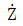
㎙ =1+j[Ω]인 회로에 복소수로 10[V]인 전압을 가했을때 전류의 순시치는 몇 [A]인가?(단, 각 주파수는 ω이다.)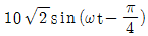
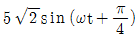
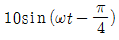
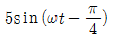
(정답률: 23%)
40. 저항 3Ω과 리액턴스 4Ω을 병렬로 연결한 회로에서의 역률은?
- 4/5
- 3/5
- 3/7
- 3/4
(정답률: 53%)
3과목: 전자계산기일반
41. 패리티 비트의 오류 검출은 몇 개 비트까지 가능한가?
- 1개
- 2개
- 3개
- 검출 불가
(정답률: 54%)
42. 가상 메모리(virtual memory)에 대한 설명 중 옳지 않는 것은?
- 컴퓨터시스템의 처리속도를 개선하기 위한 방법이다.
- 컴퓨터의 기억용량을 확장하기 위한 것이 목적이다.
- 관리 방식은 Paging 과 segmentation 기법이 있다.
- 주로 하드웨어 보다는 소프트웨어로 실현된다.
(정답률: 35%)
43. 명령(Instruction)의 구성 요소가 아닌 것은?
- Operation code
- Format
- Operand
- Comma
(정답률: 69%)
44. 스택 주소를 갖고 있는 어드레스 방식은?
- 0-주소방식
- 1-주소방식
- 2-주소방식
- 3-주소방식
(정답률: 76%)
45. 데이터를 마이크로프로세서를 거치지 않고 주변 장치가 직접 메모리에 전송하는 방식을 무엇이라고 하는가?
- DMA
- ALU
- MPU
- MDR
(정답률: 80%)
46. 1024×8비트 ROM의 경우 최소한 몇 개의 Address line이 필요한가?
- 8
- 9
- 10
- 11
(정답률: 80%)
47. 컴퓨터의 직렬 입 Χ출력 인터페이스가 아닌 것은?
- USART
- ACIA
- SIO
- PPI
(정답률: 79%)
48. 일부분의 비트 또는 문자를 지울 때 사용하는 연산은?
- Move
- AND
- OR
- Complement
(정답률: 80%)
49. 전가산기(full adder)의 구조를 올바르게 설명한 것은?
- 1개의 반가산기와 1개의 OR 회로로 구성
- 1개의 반가산기와 1개의 AND 회로로 구성
- 2개의 반가산기와 1개의 OR 회로로 구성
- 2개의 반가산기와 1개의 AND 회로로 구성
(정답률: 70%)
50. 다음 회로에서 A=1001, B=0111이 입력되어 있을 때 그 출력은?
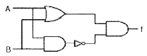
- 0111
- 1110
- 1001
- 0001
(정답률: 35%)
51. 주소 선(addresss line)이 13개, 데이터 선(data line)이 8개인 ROM의 기억용량은 몇 바이트인가?
- 128
- 256
- 4096
- 8192
(정답률: 28%)
52. 컴퓨터의 모든 행위를 감시하고, 통제하는 일련의 거대한 소프트웨어의 집합체는?
- Assembler
- Compiler
- Monitor
- Operation system
(정답률: 72%)
53. 마이크로프로세서, 메모리, 주변 인터페이스 상호간에 필요한 정보를 교신하는데 쓰이는 공동의 전송선로는?
- bus
- buffer
- multiplexer
- decoder
(정답률: 84%)
54. 서브루틴을 호출할 때 복귀 주소(Return address)를 기억하는데 주로 사용되는 것은?
- 스택
- 상태 레지스터
- 프로그램 카운터
- 프로그램 상태 레지스터
(정답률: 74%)
55. 다음 세가지 연산자가 혼합되어 나오는 식에서 연산 순서는?
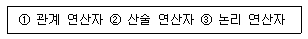
- ①→②→③
- ③→②→①
- ②→①→③
- ③→①→②
(정답률: 40%)
56. 어떤 명령이 실행되기 위해 가장 우선적으로 수행 되어야 하는 마이크로 동작은?
- PC → MBR
- PC+1 → PC
- MBR → IR
- PC → MAR
(정답률: 86%)
57. 순서도(flowchart) 작성시 특징에 속하지 않는 것은?
- 프로그램의 수정은 쉽지만 새로 추가하기 어렵다.
- 각 종류의 문서를 기록적으로 보관하기 쉽다.
- 처리의 순서와 흐름을 쉽게 파악하여 착오 검색을 용이 하게 한다.
- 프로그램의 코딩이 쉽다.
(정답률: 74%)
58. MOS내에 전하로 기억시킨 내용을 자외선을 쬐여 그 내용을 지울 수 있고 다시 다른 내용을 기록할 수 있는 장치는?
- DRAM
- SRAM
- PROM
- EPROM
(정답률: 62%)
59. 전자계산기 코드 중 에러를 검출하여 교정까지 할 수 있는 것은?
- 액세스 3코드
- 아스키 코드
- 해밍 코드
- 그레이 코드
(정답률: 87%)
60. 연산장치에서 피가수를 기억하고 연산 후에는 결과를 일시적으로 기억하는 레지스터를 무엇이라 하는가?
- accumulator
- storage register
- index register
- instruction counter
(정답률: 75%)
4과목: 전자계측
61. 최대 눈금 300[V]인 0.2급 전압계로 전압을 측정하였더니 지시가 100[V]였다. 상대오차는?
- 0.2[%]
- 0.4[%]
- 0.6[%]
- 0.8[%]
(정답률: 77%)
62. 60 Hz의 전압을 오실로스코프로 측정 할 때 주기는 약 얼마인가?
- 60[sec]
- 1[sec]
- 16.6[msec]
- 60[msec]
(정답률: 68%)
63. 왜곡율을 측정하는 방법을 열거한 것 중 옳은 것은?
- 기본파와 고주파 전압의 적
- 기본파와 고주파 전압의 비
- 기본파와 고주파 전류의 적
- 기본파와 고주파 전류의 비
(정답률: 71%)
64. 오실로스코프(oscilloscope)로 측정할 수 없는 것은?
- 전압 측정
- 변조도 측정
- 임피던스 측정
- 시간간격, pulse의 입상 시간(rise time) 측정
(정답률: 80%)
65. 왜율을 표시한 식으로 옳은 것은? (단, Ef 는 기본파 전압, Eh 는 고조파 전압이다.)
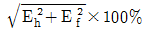
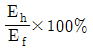
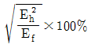
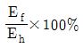
(정답률: 67%)
66. 임피던스 Z1∼Z4로 구성된 교류 브리지에서 평형 조건이 되는 것은?
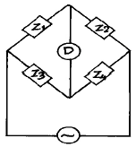
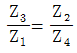
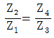
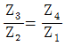
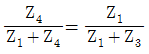
(정답률: 46%)
67. 다음 회로는 휘스톤 브리지이다. X는?
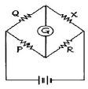
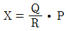
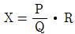
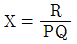
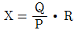
(정답률: 62%)
68. 헤테로다인 주파수계에 단일 비트(single beat)법 보다 2중 비트(double beat)법이 좋은 이유는?
- 구조가 간단하므로
- 취급이 용이하므로
- 고정용 발진기를 사용하므로
- 제로 비트 식별이 용이하므로
(정답률: 90%)
69. 다음 그림은 오실로스코프로 위상을 측정하는 그림이다. 출력 파형이 그림과 같은 리셔쥬 도형일 때 위상 측정식으 로 옳은 것은?
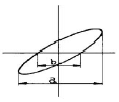
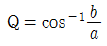
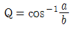
(정답률: 71%)
70. 가동 철편형 계기에서 주파수의 영향을 보상하기 위하여 직렬 저항에 병렬로 삽입된 콘덴서의 크기는 다음 중 어느 것이 적당한가?
- C=R/L
- C=L/R
- C=R/L2
- C=L/R2
(정답률: 52%)
71. 단상 교류 전력을 측정하기 위한 방법이 아닌 것은?
- 3전력계법
- 3전류계법
- 3전압계법
- 단상전력계법
(정답률: 82%)
72. 신호의 에너지와 전압을 주파수의 함수로 정보를 제공하는 실시간 분석기는?
- 스펙트럼 분석기
- 스위프 신호발생기
- 고조파 왜율 분석기
- 디지털 스토리지 스코프
(정답률: 70%)
73. 단상 교류 전력을 측정하기 위한 방법이 아닌 것은?
- 3 전류계법
- 3 전압계법
- 단상 전력계법
- 3 전력계법
(정답률: 74%)
74. 스위프 발진기로서 조정할 수 없는 것은?
- 고주파 회로의 주파수 특성
- 중간 주파 회로의 주파수 특성
- TV 수상기의 종합 선택도 특성
- 편향 회로의 직선성 조정
(정답률: 54%)
75. 직류 전류계의 지시 회로가 그림과 같을 때 A2의 내부 저항 값은?
- 4Ω
- 3Ω
- 2Ω
- 1Ω
(정답률: 50%)
76. 비트(beat) 발진기의 계통도에서 고정 발진기의 주파수를 100kHz로 선정한다면 빈칸의 회로는?
- 저주파 발진기
- 신호 감쇠기
- 저역 여파기
- 고역 여파기
(정답률: 68%)
77. 계측기에서 1개의 회전 축에 2개의 가동 코일을 교차로 장치하여 구동 토크와 제어 토크가 상반되도록 한 제어 장치를 무슨 제어라 하는가?
- 중력 제어
- 스프링 제어
- 전자 제어
- 와전류 제어
(정답률: 37%)
78. 가동코일형 계기의 특징이 아닌 것은?
- 동작 원리상으로는 직류 전용 계기이다.
- 구동 토크가 크며, 감도 정확도가 높다.
- 직류에 대해서 균등눈금이 안된다.
- 온도변화 및 외부자장의 영향으로 인한 오차가 작다.
(정답률: 70%)
79. 가장 높은 주파수까지 사용할 수 있는 계기는?
- 흡수형 주파수계
- 헤테로다인 주파수계
- 레헤르선 주파수계
- 동축형 주파수계
(정답률: 62%)
80. 흡수형 주파수계에서 공진주파수 fo를 나타낸 식으로 옳은 것은? (단, L은 코일의 인덕턴스, C는 조정용 가변 용량임.)
(정답률: 66%)